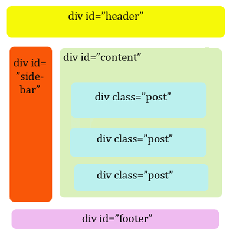

Font-end Based
Shi Huanyu
HTML
DOCTYPE
HTML 4.01
<!DOCTYPE html PUBLIC "-//W3C/DTD HTML 4.01//EN" "http://www.w3.org/TR/html4/strict.dtd">
XHTML 1.0
<!DOCTYPE html PUBLIC "-//W3C/DTD XHTML 1.0 Strict//EN" "http://www.w3.org/TR/xhtml1/DTD/xhtml1-strict.dtd">
HTML 5
<!DOCTYPE html>
For Validator！
Element
Block
div, h1~h6, p, ul, dl, ol...
Inline
a, img, li, span, input, select...
HTML5

CSS

W3C
IE(6-)
Words
font-family: "Microsoft YaHei",tahoma, arial ,"sans-serif";
font-size: 20px | 1.5em;
line-height: 20px | 1.5;
font: 20px/20px "Microsoft YaHei",tahoma, arial ,"sans-serif";
color: blue | #0000FF | rgb(0, 0, 255) | rgb(0%, 0%, 100%) | rgba(0, 0, 255, 0.5) | hsl(240, 100%, 100%)
word-wrap: normal | break-word;
word-break: normal | break-all | keep-all;
white-space: nowrap;
text-overflow: ellipsis | clip;
垂直居中
Float
浮动出现的初衷:实现文字环绕效果
浮动的破坏性:造成父元素高度塌陷
父容器高度塌陷不是BUG,特性使然!
清除浮动带来的影响:(1)clear (2)BFC(IE8+)/haslayout(IE6/IE7)
导航条
Position
position: relative | absolute | fixed;
top
right
bottom
left
z-index
两列布局
CSS3
内核与前缀
主要代表为IE
Trident (['traɪd(ə)nt]): -ms-
主要代表为Firefox
Gecko (['gekəʊ]): -moz-
主要代表为Chrome和Safari
Webkit: -webkit-
主要代表为Opera
Presto (['prestəʊ]): -o-
内核与前缀
border-radius: 5px;
-webkit-border-radius: 5px;
-moz-border-radius: 5px;
-o-border-radius: 5px;
-ms-border-radius: 5px;
compass
autoprefixer
CSS3的标准越来越完善, 前缀最终会被取消!
border-radius
圆角
border-radius: length | %
border-top-left-radius
border-top-right-radius
border-bottom-right-radius
border-bottom-left-radius
box-shadow
阴影
[inset]: 是否是内阴影
x-offset: X轴偏移
y-offset: Y轴偏移
blur: 模糊半径
spread: 扩展半径
color: 阴影颜色
transform 2D
2D变换
translate(x, y) 平移
rotate(angle) 旋转
skew(x, y) 倾斜
scale(x, y) 缩放
transform-origin 变换中心
transform 3D
3D变换
translate3d(x, y, z) 平移
rotate3d(x, y, z, angle) 旋转
scale3d(x, y, z) 缩放
perspective 透视距离
perspective-origin: x y 透视基点
transform-style: flat|preserve-3d; 如何在 3D 空间中呈现被嵌套的元素
transition
转换
transition-property 转换属性
transition-duration 持续时间
transition-timing-function 时间函数(贝塞尔曲线)
transition-delay 延迟时间
贝塞尔曲线 http://cubic-bezier.com/
@keyframes
@keyframes demo {
from {width: 10px;}
to {top: 20px;}
}
@keyframes demo {
0% {width: 10px;}
100% {width: 20px;}
}
animation
动画
animation-name keyframe名称
animation-duration 持续时间
animation-timing-function 时间函数(贝塞尔曲线)
animation-delay 延迟时间
animation-iteration-count number | infinite 播放次数
animation-direction alternate 是否轮流反向播放动画
PS
界面设置
自动选择
图层
工作区设置
视图
智能参考线,标尺
窗口
信息, 字符, 图层, 历史记录
首选项:
单位与标尺->单位: 像素
新建工作区保存当前设置
切图
传统切图
切片工具
参考线
精准切图